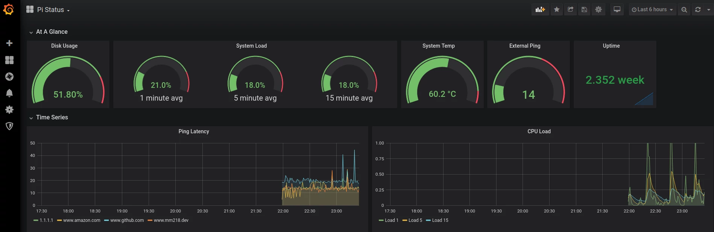
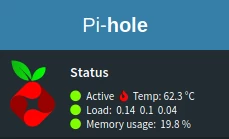
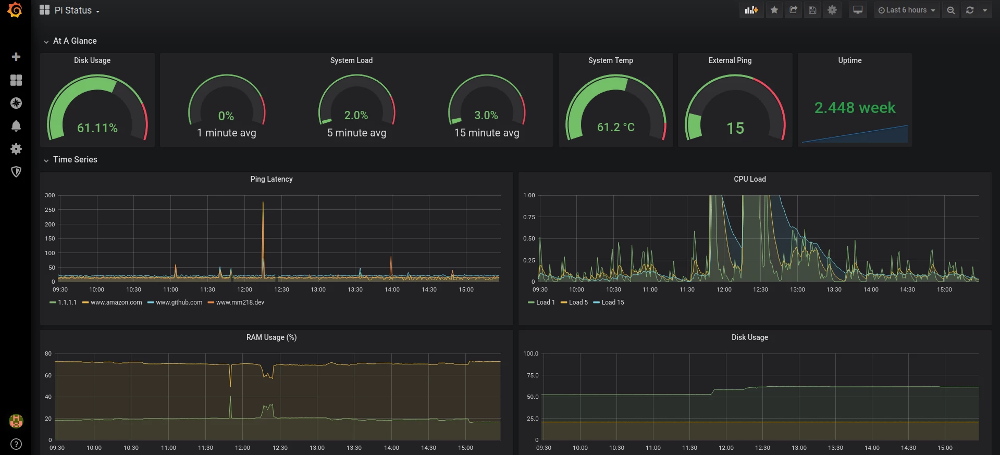

Setting Up InfluxDB, Telegraf, and Grafana on Raspberry Pi
tl;dr
Do the following in a shell you’ve already auth’d into sudo on:
sudo apt update
sudo apt upgrade
wget -qO- https://repos.influxdata.com/influxdb.key | sudo apt-key add -
# change "buster" as appropriate for your distro
echo "deb https://repos.influxdata.com/debian buster stable" | sudo tee /etc/apt/sources.list.d/influxdb.list
sudo apt update
sudo apt install influxdb
sudo systemctl unmask influxdb
sudo systemctl enable influxdb
sudo systemctl start influxdb
# you can find the current telegraf release here: https://portal.influxdata.com/downloads/
wget https://dl.influxdata.com/telegraf/releases/telegraf-1.14.2_linux_armhf.tar.gz
tar xf telegraf-1.14.2_linux_armhf.tar.gz
sudo systemctl enable --now telegraf
rm telegraf-1.14.2_linux_armhf.tar.gz
sudo apt-get install -y adduser libfontconfig1
# you can find the current grafana release here: https://grafana.com/grafana/download
wget https://dl.grafana.com/oss/release/grafana_6.7.3_armhf.deb
sudo dpkg -i grafana_6.7.3_armhf.deb
sudo systemctl enable --now grafana-server
rm grafana_6.7.3_armhf.deb
This should cause all three services to start on system boot. You’ll need to configure Telegraf to actually write to your local Influx instance at http://127.0.0.1:8086 (there’s a sample config under the Telegraf part of the post), then set up Grafana to read from Influx (at the same port) via the UI at localhost:3000.
Setting up the TIG stack on Raspberry Pi
I’m getting a little cabin-fevery as the 2020 quarantine moves into its third month. To try and defray some of the extra energy, I’ve been hacking on a Pi I set up with a Pi-hole and openvpn server about a month ago.
One of the cool things about the Pi-hole is that it gives you a little at-a-glance view of how your machine is doing, including CPU load, memory utilization, and temperature. This window into system stats made me realize that my little box is packing heat:

I’m running a Pi 4, which is known for generating more heat than it can handle, so temperatures of ~60 C (the upper range of “safe”) isn’t too shocking – but with summer coming and me planning to add some load to this machine in the near future, I wanted to set up monitoring to make sure my box wasn’t going to melt on me. This also has the side benefit that I’ll have a metrics system already in place for anything else I stand up on this machine.
Enter the TIG stack. TIG – Telegraf, InfluxDB, and Grafana – is a suite of open-source solutions for collecting, storing, and visualizing time-series data, like the sort you’ll get from repeatedly measuring system temperature.
This tutorial will walk you through setting up each of these services separately. These steps were tested on a Raspberry Pi 4 running Raspbian Buster, so other configurations might require some tweaking.
All of the code here should be run in a terminal on your Raspberry Pi unless I specify it needs to go somewhere else. To make sure you’re not going to run into dependency hell, it’s a good idea to run sudo apt update && sudo apt upgrade before installing any of the stack.
InfluxDB
First up, we need to set up our InfluxDB instance. This database is where our Telegraf instance will send metrics and where Grafana will read from, so it makes sense to stand it up first!
Installing the service is easy enough – we just need to add Influx’s authentication key, add their repository to our trusted sources, and then install it via apt:
wget -qO- https://repos.influxdata.com/influxdb.key | sudo apt-key add -
# change "buster" as appropriate for your distro
echo "deb https://repos.influxdata.com/debian buster stable" | sudo tee /etc/apt/sources.list.d/influxdb.list
sudo apt update
sudo apt install influxdb influxdb-client
Now we want to actually start the database, and tell our system to start it after reboots – since we’re expecting to always be collecting metrics via Telegraf, we need to make sure that we always have a place to write to, as well. This is a quick two-liner using systemctl – we first need to unmask Influx, which will let us add it as a service, then tell our Pi to start the service both right now and every time the system restarts via the enable --now command:
sudo systemctl unmask influxdb
sudo systemctl enable --now influxdb
After this, you should be able to run systemctl status influxdb to see the service status – if everything went according to plan, you should see Active: active (running) around line 3 of the output.
At this point, it’s probably healthy to add authentication to your Influx instance if your pi is exposed to external networks. You can set up a basic admin account via:
influx
CREATE USER admin WITH PASSWORD '<password>' WITH ALL PRIVILEGES
You can then force HTTP authentication by adding the following under the HTTP header in /etc/influxdb/influxdb.conf:
[HTTP]
auth-enabled = true
pprof-enabled = true
pprof-auth-enabled = true
ping-auth-enabled = true
The changes take effect the next time your service starts, which you can trigger via sudo systemctl restart influxdb.
Telegraf
With Influx up and running, it’s time for us to start writing records, which means standing up Telegraf!
Telegraf is updated pretty frequently, so it’s a good idea to check the release page to see what version you should be installing. At the time of writing, the current version is 1.14.2, so I ran the following to install Telegraf on my machine:
wget https://dl.influxdata.com/telegraf/releases/telegraf_1.14.2-1_armhf.deb
sudo dpkg -i telegraf_1.14.2-1_armhf.deb
rm telegraf_1.14.2-1_armhf.deb
We now have Telegraf installed on our machine, but the service won’t do us much good before we set up our configuration, located at /etc/telegraf/telegraf.conf. Telegraf operates by coordinating a bunch of “plugins”, which work to collect and write data to and from different sources. You can see the full list of plugins at Telegraf’s GitHub repo, and activate each by copying the configuration from the plugin’s readme into your /etc/telegraf/telegraf.conf file.
I spent far too much time pouring over the various plugins and wound up with the following configuration file – you can use this to overwrite your default telegraph.conf file and start collecting metrics right away, or you can spend the time now to set up your instance to suit your own particular needs. Just make sure you edit your [[outputs.influxdb]] to include the following:
[[outputs.influxdb]]
## The full HTTP or UDP URL for your InfluxDB instance.
urls = ["http://127.0.0.1:8086"] # required
My full configuration looks like this:
[agent]
# Batch size of values that Telegraf sends to output plugins.
metric_batch_size = 1000
# Default data collection interval for inputs.
interval = "30s"
# Added degree of randomness in the collection interval.
collection_jitter = "5s"
# Send output every 5 seconds
flush_interval = "5s"
# Buffer size for failed writes.
metric_buffer_limit = 10000
# Run in quiet mode, i.e don't display anything on the console.
quiet = true
[[inputs.ping]] # # Ping given url(s) and return statistics
## urls to ping
urls = ["www.github.com","www.amazon.com","1.1.1.1","www.mm218.dev"]
## number of pings to send per collection (ping -c )
count = 3
## interval, in s, at which to ping. 0 == default (ping -i )
ping_interval = 15.0
## per-ping timeout, in s. 0 == no timeout (ping -W )
timeout = 10.0
## interface to send ping from (ping -I )
interface = "wlan0"
[[inputs.system]]
[[inputs.influxdb]]
## Works with InfluxDB debug endpoints out of the box,
## but other services can use this format too.
## See the influxdb plugin's README for more details.
## Multiple URLs from which to read InfluxDB-formatted JSON
## Default is "http://localhost:8086/debug/vars".
urls = [
"http://localhost:8086/debug/vars"
]
## http request & header timeout
timeout = "5s"
[[inputs.disk]]
## Ignore mount points by filesystem type.
ignore_fs = ["tmpfs", "devtmpfs", "devfs", "iso9660", "overlay", "aufs", "squashfs"]
[[inputs.diskio]]
[[inputs.internal]]
## If true, collect telegraf memory stats.
collect_memstats = true
[[inputs.mem]]
[[inputs.processes]]
# custom temperature script
# https://github.com/mikemahoney218/pi-admin/blob/master/telegraf-scripts/systemp.sh
[[inputs.exec]]
commands = ["sh /tmp/telegraf-scripts/systemp.sh"]
timeout = "5s"
data_format = "influx"
[[outputs.influxdb]]
## The full HTTP or UDP URL for your InfluxDB instance.
urls = ["http://127.0.0.1:8086"] # required
## The target database for metrics (telegraf will create it if not exists).
database = "pi_logs" # required
## Name of existing retention policy to write to. Empty string writes to
## the default retention policy.
retention_policy = ""
## Write consistency (clusters only), can be: "any", "one", "quorum", "all"
write_consistency = "any"
## Write timeout (for the InfluxDB client), formatted as a string.
## If not provided, will default to 5s. 0s means no timeout (not recommended).
timeout = "10s"
In putting all this together, I found out that the Telegraf plugin to measure system temperature – the thing that got me down this rabbit hole in the first place – doesn’t actually work on Raspberry Pi systems. As a workaround, I threw together a simple one-liner in Bash:
echo "systemp temp=`cat /sys/class/thermal/thermal_zone0/temp`"
I saved that script off to /tmp/telegraf-scripts/systemp.sh, then added it to my telegraf.conf in the brick:
[[inputs.exec]]
commands = ["sh /tmp/telegraf-scripts/systemp.sh"]
timeout = "5s"
data_format = "influx"
If you’re not worried about measuring temperature, you don’t need (or want) to include that section in your telegraf.conf.
If you set up HTTP authentication for your Influx instance, you’re going to want to add username and password fields under the [[outputs.influxdb]]
With our configuration in place, all that’s left now is to start and enable the Telegraf service:
sudo systemctl enable --now telegraf
As before, you should be able to see that the service is running without issue by running systemctl status telegraf.
Now that your service is running, any changes that you make to your telegraf.config file will only take effect after the service restarts. You can always restart the service using sudo systemctl restart telegraf, but I personally kept forgetting to do so (and then was surprised when my metrics weren’t showing up in Influx). To deal with that, I wrote an extremely-micro service that restarts Telegraf for me.
Grafana
We’re finally onto our last service, the G in the TIG stack, Grafana. A quick word of warning: don’t try to sudo apt install grafana. The main repository has an outdated version of Grafana, which will leave you stuck at a blank screen when you try to log on for the first time.
Instead, we’ll install Grafana via dpkg, like we did with Telegraf. Check for the most current version at Grafana’s downloads page. At the time of writing, I was installing version 6.7.3, so my commands to install looked like this:
wget https://dl.grafana.com/oss/release/grafana_6.7.3_armhf.deb
sudo dpkg -i grafana_6.7.3_armhf.deb
sudo systemctl enable --now grafana-server
rm grafana_6.7.3_armhf.deb
Unlike Influx and Telegraf, Grafana can be managed almost entirely from a UI. Boot up localhost:3000 on your Pi and log in using admin for both your username and password – you’ll be prompted to change it once you’re logged in for the first time.
You’ll then want to add your local Influx instance as a datasource for Grafana. Assuming you’ve followed along until now, the URL for your Influx instance is http://localhost:8086. You’ll also want to add whatever database Telegraf is writing to – in the sample configuration I posted, the database name is pi_logs, but you can find yours by looking for the database field under [[outputs.influxdb]]. If you added authentication to your Influx instance, you’ll also want to turn on basic auth and provide your database credentials.
Get Graphing
And with that, you should have everything you need to start monitoring your Pi – and, with a little elbow grease, anything your Pi can touch! While it certainly feels a little like overkill, I’ve now got state-of-the art tracking and system metrics for my Pi, letting me confirm beyond a shadow of a doubt that… my Pi is running too hot. With all the time I spent on this, maybe I should have just bought a fan.
But hey – would a fan look this good?
